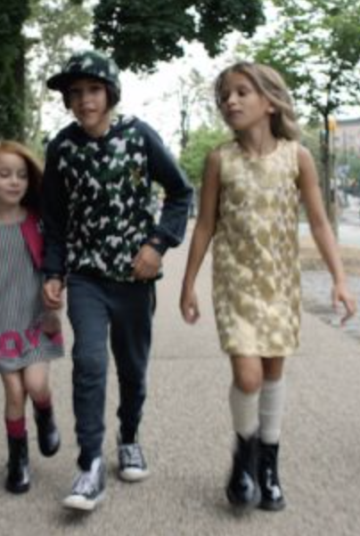
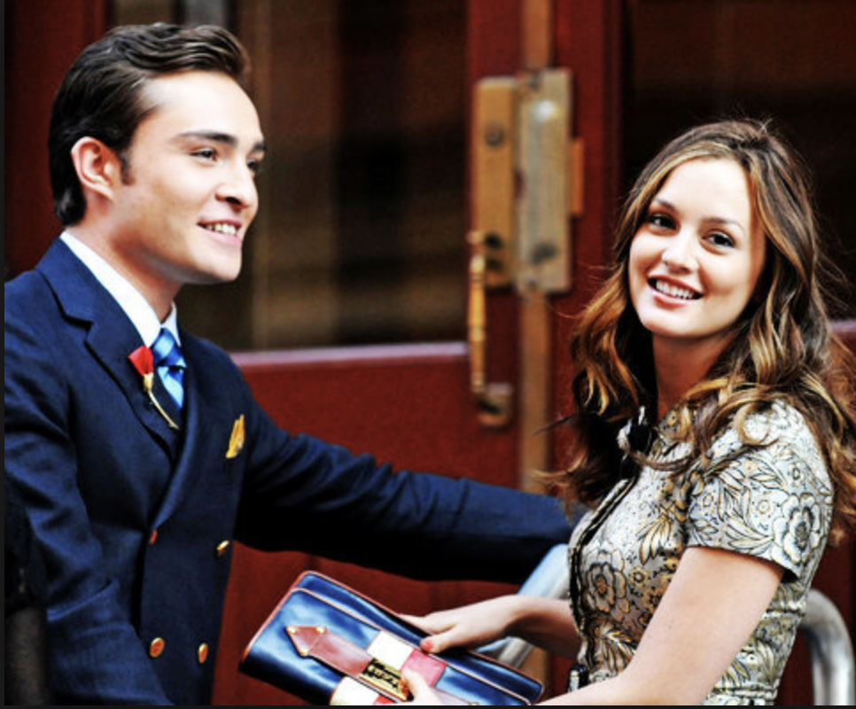

Blair og Chuck er vokset op sammen på Upper East Side, som er et meget velhavende område i New York. De har kendt hinanden siden de var små børn, men de har altid haft et ”love and hate” forhold”
Da de begynder i High School sammen, begynder deres kærlighedsforhold for alvor. Dog ikke uden drama. De er kæreste og ikke kæreste, igennem hele serien. De er begge meget dramatiske, og vil begge have deres vilje. De har begge forskellige kærester igennem serien, men alligevel kan de ikke undvære hinanden, og finder altid sammen igen
Efter nogle hårde teenage år, indser de begge, at de er skabt for hinanden. Chuck frier til Blair, og de bliver gift midt inden i central park, et sted hvor de begge har brugt rigtig meget tid sammen